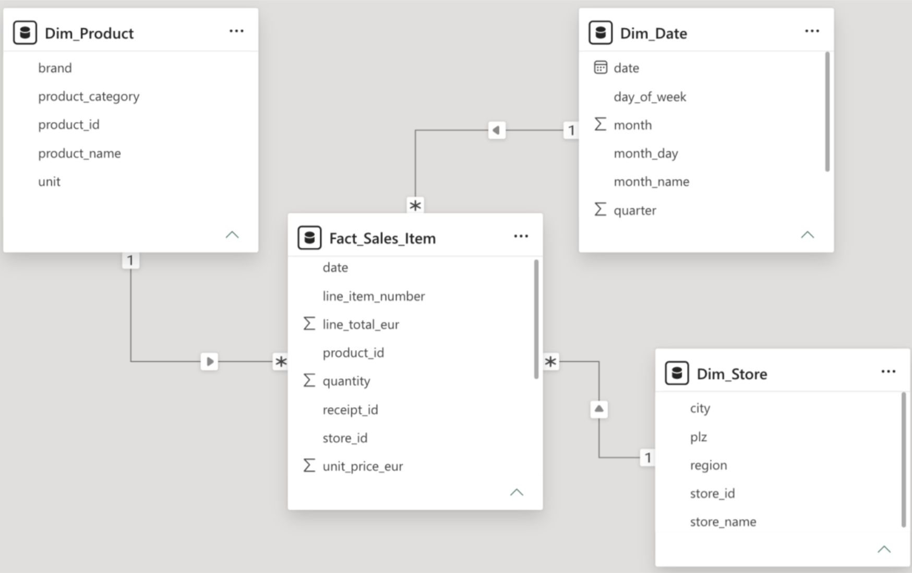
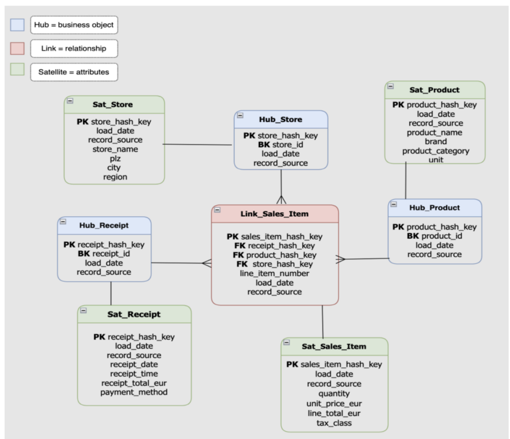

STAR SCHEMA × DATA VAULT 2.0
Two ways to model the same retail data
The project explores two fundamentally different approaches to structuring the same retail dataset: a dimensional Star Schema designed for analytics and a Data Vault 2.0 model designed around business objects, relationships, historization and traceability. The basis is a digital retail receipt with header- and line-item-level data; the goal was a market-basket analysis at the level of the individual line item, where it becomes visible which products occur together in one purchase.
A practical comparison of analytical simplicity, historization and scalability using receipt-level retail data.
- SQL
- Data Modeling
- Kimball
- Data Vault 2.0
SAME DATA. TWO MODELS.
Two architectures, built from one dataset
01 STAR SCHEMA

DESIGNED FOR ANALYSIS
Fact and dimension tables organize the retail data around analytical queries and make the model straightforward to consume for BI and reporting. A central fact table Fact_Sales_Item sits at line-item granularity, surrounded by Dim_Product, Dim_Date and Dim_Store; the star-shaped structure makes the analytical axes immediately visible.
GRAIN
One row in Fact_Sales_Item = one product line within a receipt.
02 DATA VAULT 2.0

DESIGNED FOR CHANGE
Hubs represent business objects, Links represent relationships and Satellites store descriptive attributes with historization and source tracking. Hash keys, load date and record source make every row traceable.
- HUBS
- Business objects
- LINKS
- Relationships
- SATELLITES
- Attributes + history
MODEL COMPARISON
Two models. Different priorities.
MODELING DECISIONS
What changed under the hood?
GRAIN
One row in the fact table represents one product line within a receipt.
BUSINESS KEYS
Product, store and receipt represent core business objects.
HISTORIZATION
Data Vault satellites preserve descriptive attributes over time.
TRACEABILITY
load_date and record_source support historical tracking and lineage.
WHAT I LEARNED
Data modeling is not about making the architecture as complex as possible.
The comparison showed that different modeling approaches optimize for different priorities.
ANALYTICAL SIMPLICITY
Star Schema
STRUCTURAL FLEXIBILITY
Data Vault 2.0
CONCLUSION
What fits this use case?
For this use case — a single data source, direct market-basket analysis — the Star Schema proves more suitable: simpler, easier to understand, faster to use. Data Vault scores on flexibility, historization and extensibility, and would show its value primarily with multiple source systems and growing data landscapes.
This is a conclusion about this project, not a universal rule.